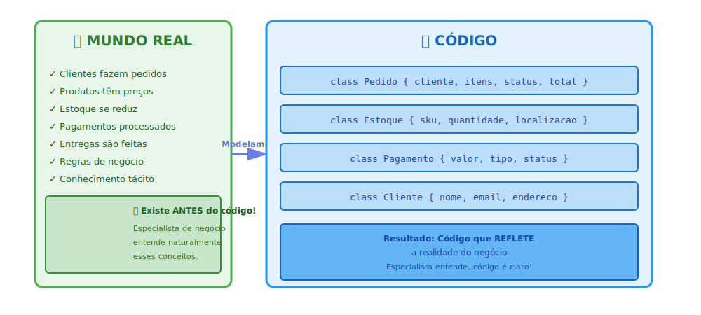
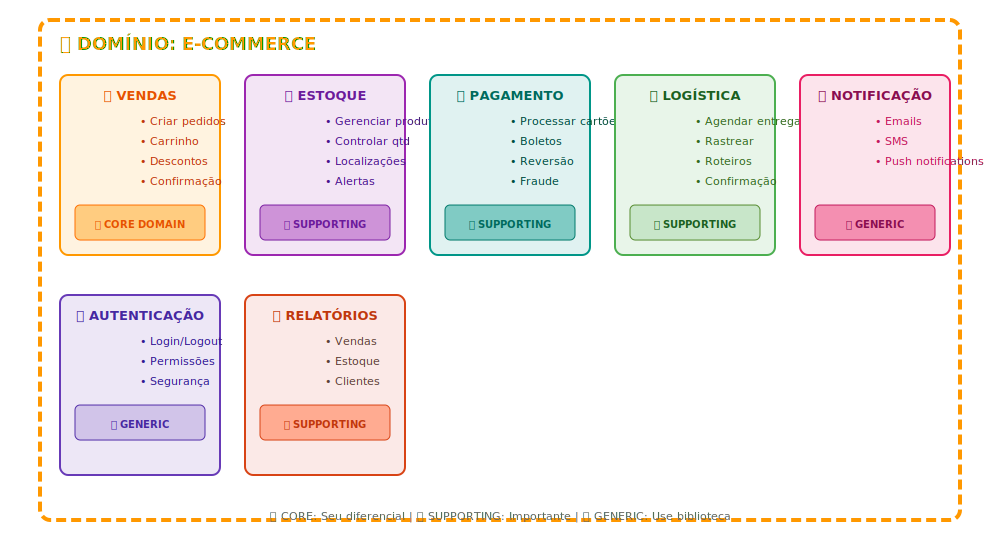
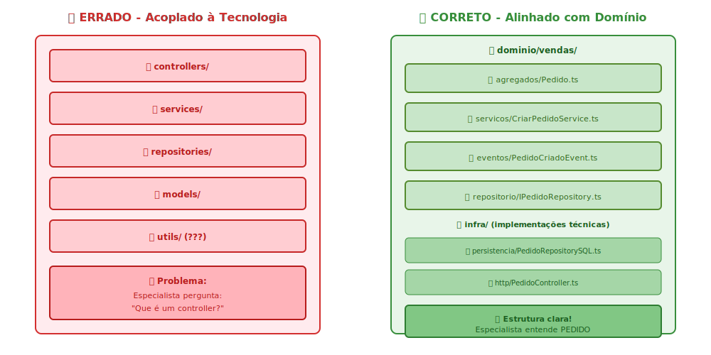
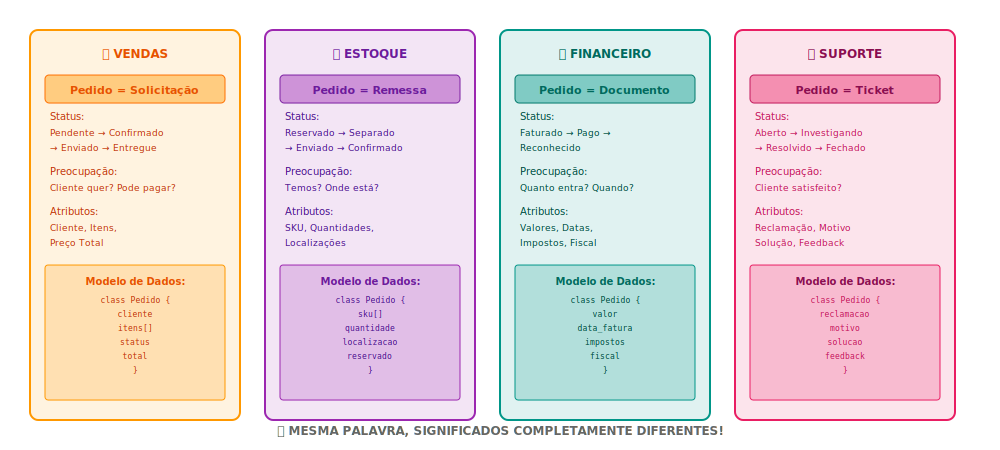

1️⃣ Estrutura Básica do Domínio
Como o mundo real se transforma em código através da modelagem de domínio

💡 Conceito-chave: O domínio não é sobre tecnologia. É sobre compreender o problema que
você está resolvendo.
2️⃣ Subdomínios de um E-commerce
Um domínio grande é dividido em subdomínios com responsabilidades específicas

💡 Insight: Diferentes subdomínios recebem investimento diferente. Core Domain merece
melhor arquitetura e testes.
3️⃣ Camadas de Compreensão do Domínio
Um domínio é composto por diferentes camadas de conhecimento que precisam ser extraídas

🎯 Ação: Use Event Storming e conversas estruturadas para extrair todas as camadas de
conhecimento.
4️⃣ Separação Crítica: Domínio vs Tecnologia
A estrutura do código deve refletir o domínio, NUNCA a tecnologia

🔑 Regra de Ouro: Organize por DOMÍNIO, não por camadas técnicas. Tecnologia fica em
"infra", jamais no núcleo.
5️⃣ A Mesma Palavra em Contextos Diferentes
A palavra "Pedido" significa coisas completamente diferentes em cada bounded context

💡 Conclusão: DDD reconhece isso e permite que cada bounded context tenha seu próprio
modelo. Sem isso, confusão total!
6️⃣ Evolução: Como o Domínio Muda com o Tempo
O domínio não é estático. Evolui conforme aprendemos mais sobre o negócio

📊 Timeline: Semana 1 = Ignorância → Semanas 2-4 = Descoberta → Semana 4+ = Maturidade →
Sempre = Evolução